Elavon is a leading payment service provider (PSP) and is one of the most trusted payment brands. Elavon makes the process of accepting payments online, over the phone, or in-person simpler, faster, safer and more profitable for businesses.
Currently, Meddbase integrates with Opayo Server, Meddbase users can allow patients to pay their invoices online, either via the Patient Portal or simply by emailing them a link to an online payment page. Online patient payments are updated in real-time within Meddbase.
Online payments using Opayo are only possible when the debtor is the patient. If the debtor is not the patient online payment is not possible.
Opayo are changing their trading name to Elavon. This means their website, telephone, email addresses and communications will reference Elavon. Elavon will continue to use the Opayo name to describe their eCommerce and face-to-face products, for example the Opayo gateway or the Opayo POS solutions. Meddbase will still use the term Opayo.
This article will walk you through the process of integrating Opayo in your Meddbase application.
This includes steps you need to take on Opayo website as well as within Meddbase.
WARNING
For non-Meddbase related errors and troubleshooting related to Opayo, you can find further resources related to your Opayo account here: https://www.elavon.co.uk/ Or you can send an email to opayosupport@elavon.com using your businesses email address that is associated with your Opayo account.
To sign up for an Opayo account, simply contact Elavon at https://www.elavon.co.uk/contact-us/sales-enquiry.html
Follow the instructions provided on the form and additional communication from Elavon
If you want to set up the demo chamber with a test Opayo account you will need to contact Opayo and request a test account. This may be an additional charge for them to set up.
Typically, clients will priortise the live chamber and configure the live chamber and live Opaya account and do not run a test in demo. Please dicsuss with your project manager, client success manager or client account manager if you would like to discuss this.
The IP address for the demo chamber is 062.032.103.224 and the subnet is 255.255.255.240
MyOpayo is a cloud-based reporting & admin portal to manage your account and transactions. Two MyOpayo environments will be created for you, test and live.
Meddbase does not have a test environment to run a test transaction. Please ensure you complete a test transaction outside of Meddbase on the test Opayo portal. Once this is complete you will be provided with live Opayo credentials which can be added to your Live Meddbase chamber.
Detailed instructions on accessing and configuring MyOpayo will be provided in an email sent by Opayo immediately after creating a Opayo account. For the purpose of this guide, simply follow the link to the test MyOpayo portal, select a password and log in.
The first thing to do is to enable Online Payments. To do this:-
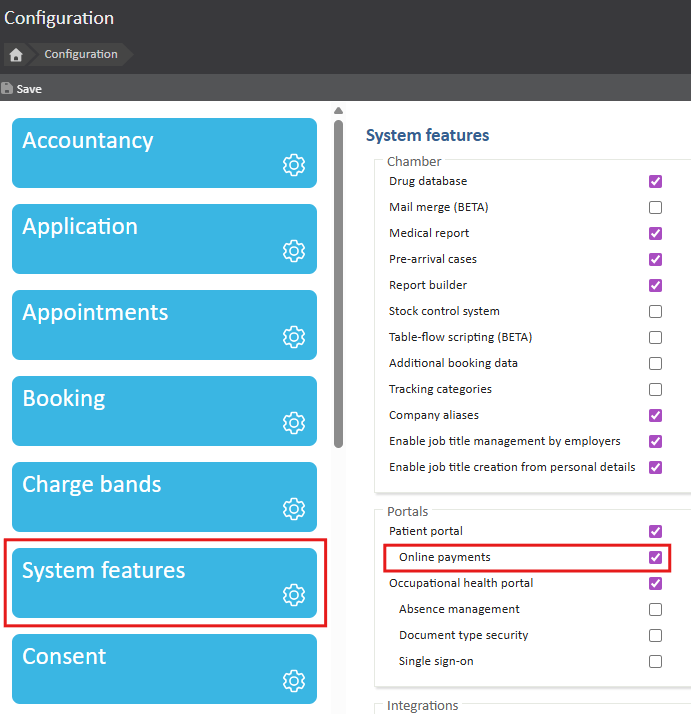
After Online Payments have been enabled, it’s time to set up one or more Online Payment Types. To do this:-
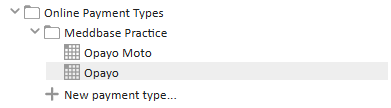
Making payments within your Meddbase chamber, from the Patient Portal and via emails containing online payment links will be covered in section 7 of this guide.
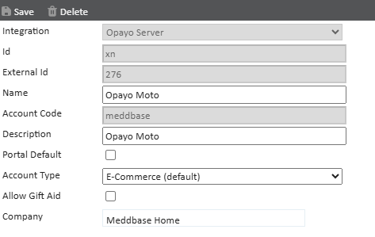
A group of configuration options needs to be set up for each payment type, for it to function correctly with Meddbase:
The ID and External ID are read-only fields that are set automatically upon saving the payment type.
Account Code should not contain any capital letters or spaces.
There are configuration steps that need to be completed on the Opayo portal:-
3D Secure rules and AVS/CV2 rules can be configured on the Opayo portal in additional to the below steps.
This will allow your Meddbase chamber to communicate with the Opayo API.
Navigate to Settings > Valid IPs and add the following set of details:
| IP Address: 217.150.99.0 | Subnet Mask:255.255.255.248 |
| IP Address: 217.150.100.24 | Subnet Mask:255.255.255.248 |
| IP Address: 83.217.106.128 | Subnet Mask:255.255.255.128 |
| IP Address: 84.45.68.196 | Subnet Mask:255.255.255.240 |
| IP Address: 84.45.87.32 |
Subnet Mask:255.255.255.240 |
As of April 2024, please also add the following: IP Address: 212.133.113.0 Subnet Mask: 255.255.255.128
These can be named however you feel fit.
A recommendation would be "Meddbase IP range 1,2,3,4,5" as the naming of these IP Ranges does not affect the functionality, it's simply for your internal referencing.
If these are not configured correctly, the error below may appear:
"4020 : Information received from an Invalid IP address"
The next thing to do on the MyOpayo portal is to set up two user accounts, an admin and a non-admin user.
This can be done by navigating to Settings > Users. Please keep in mind that the account created via the Opayo registration email should already have admin privileges.
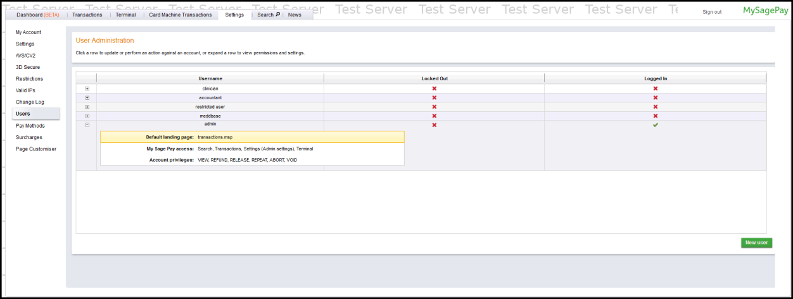
After setting up an online payment type as described in section 4 of this guide, there will be three ways of making Opayo payments with Meddbase, in the main application, on the Patient Portal and via emails containing online payment links. Each of these three scenarios is described below.
Please bear in mind that some transaction types, such as pre-authorisations, may need to be enabled by contacting Opayo customer support. This will usually be indicated by an error with a code/status of ‘4006: INVALID’ when attempting to make that transaction. More about this can be found on the Opayo support site.
The most straightforward way of making online payments from within Meddbase is from an invoice. Simply navigate to Accounts > Invoices and open the invoice you want to make a payment on, alternatively, the invoice can be found by typing the invoice ID in the Quick Search bar on the top right. Once you are in the invoice as normal you would go to make a payment and mark the invoice as sent if not done so already.
A new payment method will appear which will be labeled however you labeled it in section 4 of this article. In this case, you can see it is called Opayo.
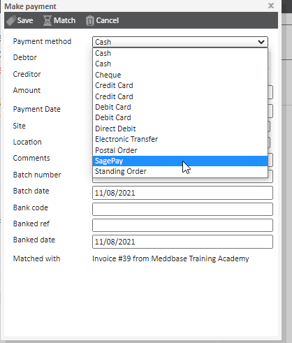
You will then need to make sure the address and payer details are correct before clicking save.
From the next window that pops up on the screen, you can add the patient's card details After clicking the Save button to confirm the transaction, Opayo will authorise the transaction and return you to the invoice to show you that the payment has been made.
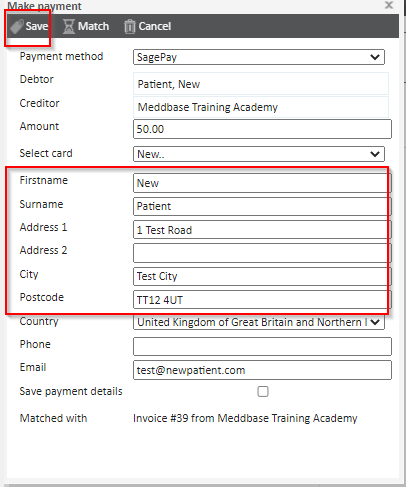
From the next window that pops up on the screen, you can add the patient's card details.
After clicking the Save button to confirm the transaction, Opayo will authorise the transaction and return you to the invoice to show you that the payment has been made.
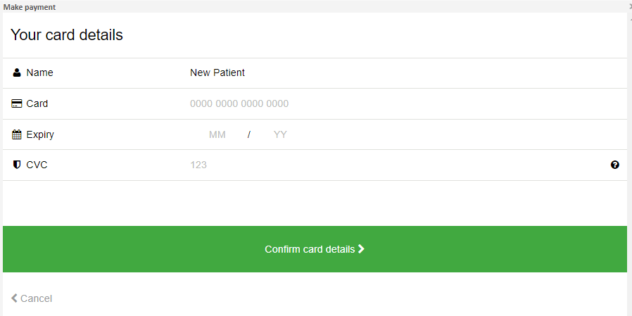
If any error message appears at this stage you can search the code provided on the Opayo website to understand the reasoning for that error.
https://www.opayo.co.uk/support/error-codes
Another way Opayo can be used within Meddbase is to pre-authorise payments from an appointment home page or from an unsent invoice. This allows a Meddbase user to temporarily store the patient’s card details, so when the appointment is arrived at a later date and the invoice is marked as sent, the user can charge the card without having to contact the patient for payment details.
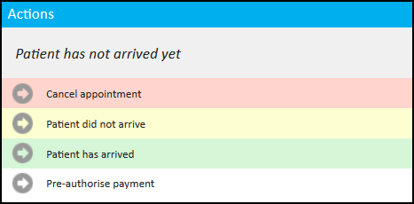
Opayo can also be used to make payments on membership invoices or set up a recurring membership payment*. This can be done from the patient home by clicking on the Membership Scheme field on the Account panel. Doing so causes the following pop-up window to display, and from here a Meddbase user can either open the invoice and make an online payment as described earlier in this section of the guide or set up a recurring membership payment which will use the stored card details to make payments against invoices raised by the membership scheme that the patient is a member of.
*Before setting up a Membership Scheme on a Charge Band, please contact Opayo and ask for Repeat Payments to be turned on for your account.
Click here for more details on Membership Scheme Configuration Overview.
Click here for more details on Membership Scheme Invoice Schedules and Calculations.
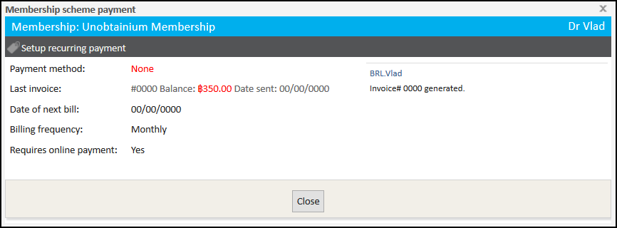
After emailing an invoice from Meddbase, the patient can follow the online payment URL in the email which will take them to the Patient Portal linked to the chamber from which the invoice was emailed. Once on the payment page, the patient has two options, they can either make an anonymous online payment…
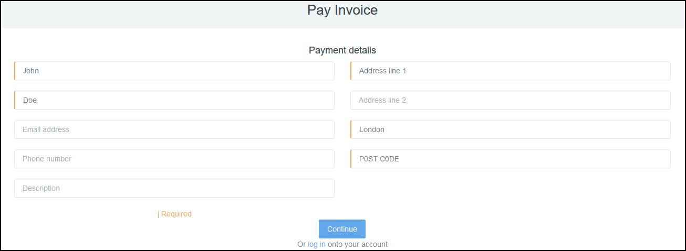
…or log into the Patient Portal and make a payment against the invoice directly from their Patient Portal account. Payments made from the Patient Portal will be covered in the next sub-section.
While logged into the Patient Portal, a patient can make an online payment against any unpaid invoice from the Invoices page. They can also pay membership invoices and/or set up a recurring membership payment from the Memberships page.
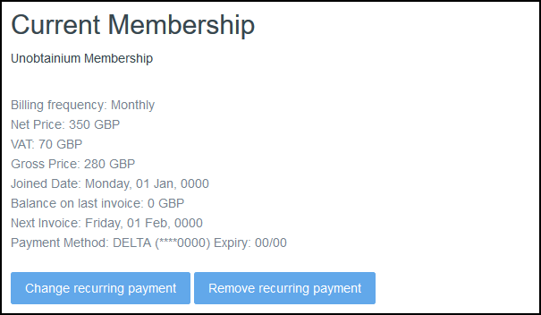
All payments made on the Patient Portal automatically reflect in your Meddbase chamber as well.